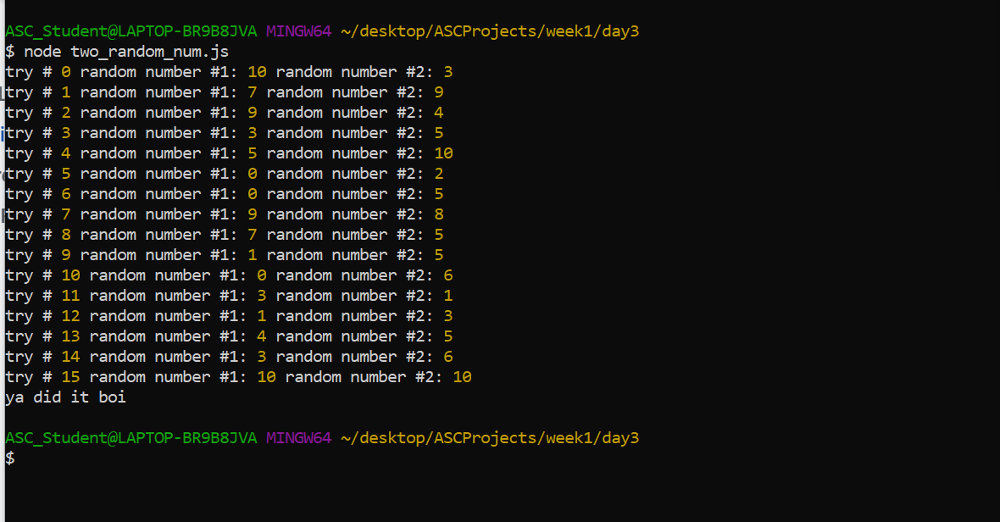
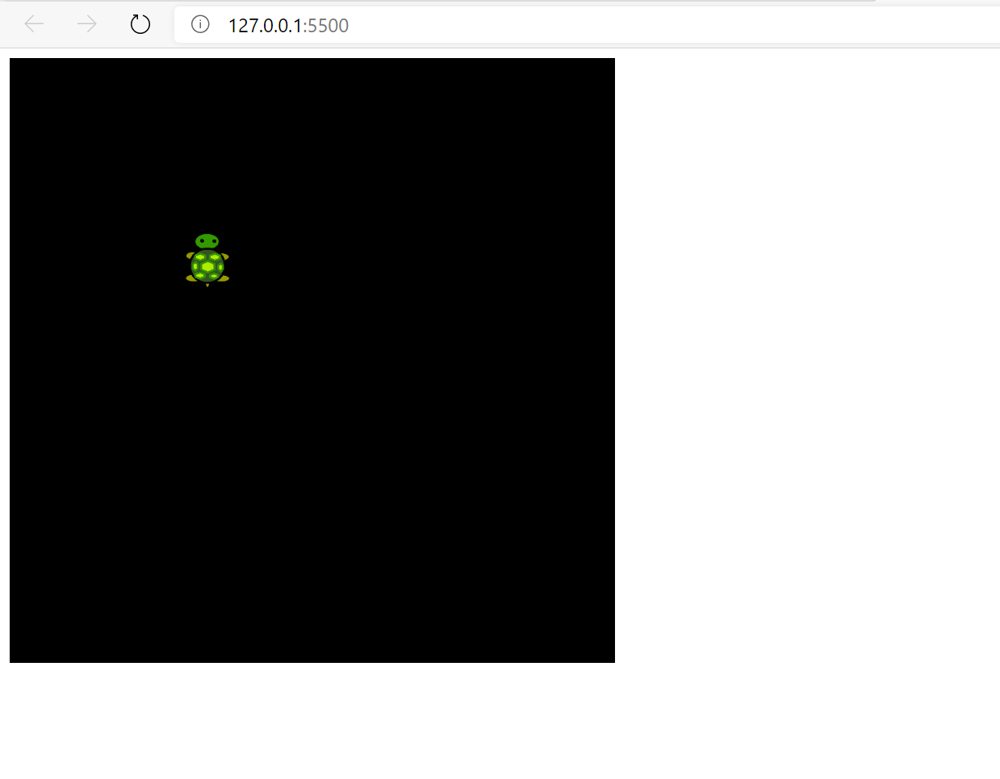

Chess in my life
*****The beginning of my chess story*****
Not long ago, I had no idea what chess was. The only way I was associated with it was because my sister entered a chess club in elementary school. But even then, I still had no idea what chess was and what doors and opportunities could arise. At the time I was around 7, and my sister was in the 5th grade. She had just recently joined the chess club for whatever reason. However that didn’t last long, for whatever reason, chess club in my elementary school ended. Therefore, I didn’t know how to play chess until I was around 11. It was only until I entered the seeall academy that I learned and gained a passion for chess. My parents enrolled me in this after-school programmed called FIAO at seeall. It’s this afterschool program where kids can learn robotics, get help with school subjects, play sports, and last but not least, play chess. It was in this program where I met my future chess coach, Mr. Moy. {The rest of this story is on my letter to mr.cullman
Some notable memories
- My first out of state chess trip -the project.
In this project, I codded it so that the comp would give me two random numbers. And if they were the same. It would stop. And while this sounds easy... I was pretty proud of it since I wasnt getting the whole loops concept...
- "Time to play!"-a game project.

In this project, my team and I devloped a game in an hour using the MVP method. The game was a combination of two classics.
- "Adding a twist"-An additonall project
I made it so, the ball that used to bounce off the walls, was now a turtle. Why a turtle? Because I just really like them.